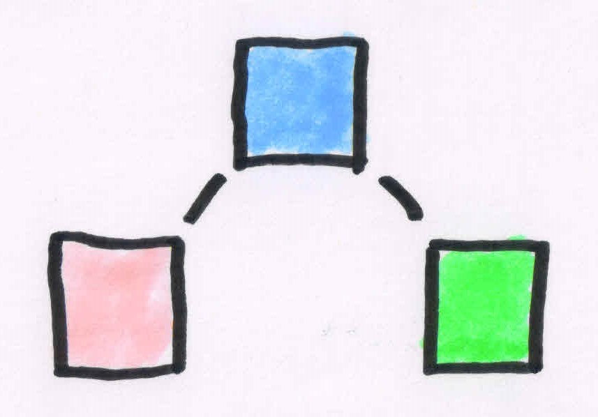
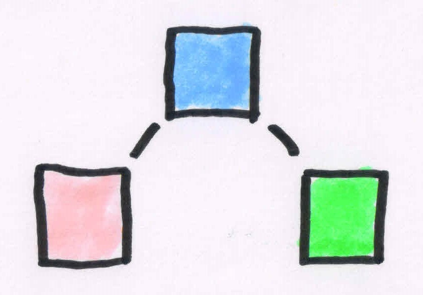
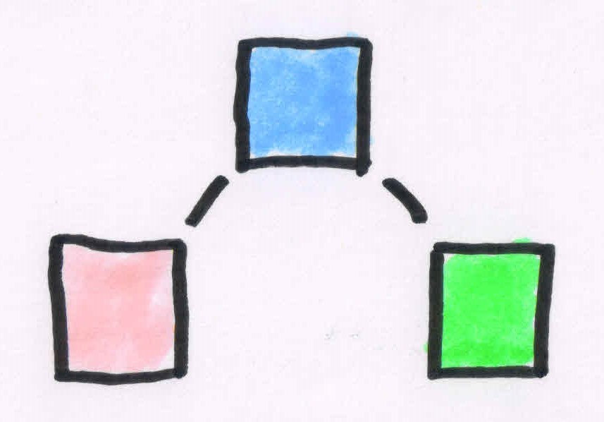

Supervised Learning with TensorFlow
Using the high-level Keras API
Oliver Zeigermann / @DJCordhose
Example: Customer Data - Risk of Accidents

How would you rank me (47) for a car having 100 mph top speed, driving 10k miles per year?
Next step: Encode this with Keras
Sequential Model
model = keras.Sequential()
Fully Connected Hidden Layer
model.add(Dense(units=50, input_dim=3))
Softmax Output Layer
model.add(Dense(units=3, activation='softmax'))
How does learning work?
This boils down to an optimization problem
The loss to be minimized is calculated from the difference between the softmax output and the known true category
model.compile(loss='sparse_categorical_crossentropy',
optimizer='adam',
metrics=['accuracy'])
What does the neural network learn?
Optimal values of weights (+biases) for all neurons
model.summary()
_________________________________________________________________
_________________________________________________________________
Layer (type) Output Shape Param #
=================================================================
hidden1 (Dense) (None, 50) 200
_________________________________________________________________
softmax (Dense) (None, 3) 153
=================================================================
Total params: 353
Trainable params: 353
Non-trainable params: 0
_________________________________________________________________The Issue: Overfitting

Training Score


Test Score
Training Score
Test Score
Training and test scores clearly divert
Illustration using Loss Landscape

deep network, sharp surface, many solutions

residual shortcuts, smooth surface, naturally converging
ResNet Architecture having 56 layers
https://github.com/tomgoldstein/loss-landscape#visualizing-3d-loss-surface
Second approach: Reduce capacity of model

Original model


Smaller model
less hidden layers, less neurons per layer
Intuition: Give model less capacity to simply memorize data
Third approach: Use Dropout
Dropouts only train a certain percentage of neurons per batch
Original model

Ensemble of small models (each one overfits on its specific batch)
Intuition: Combination of models makes result more robust
deep network, sharp surface, many solutions
residual shortcuts, smooth surface, naturally converging
ResNet Architecture having 56 layers
https://github.com/tomgoldstein/loss-landscape#visualizing-3d-loss-surface
Second approach: Reduce capacity of model
Original model

Smaller model
less hidden layers, less neurons per layer
Original model

Smaller model
less hidden layers, less neurons per layer
Intuition: Give model less capacity to simply memorize data
Third approach: Use Dropout
Dropouts only train a certain percentage of neurons per batch
Original model
Ensemble of small models (each one overfits on its specific batch)
Intuition: Combination of models makes result more robust